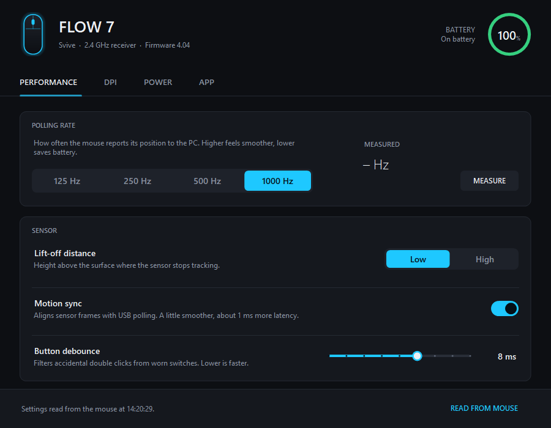
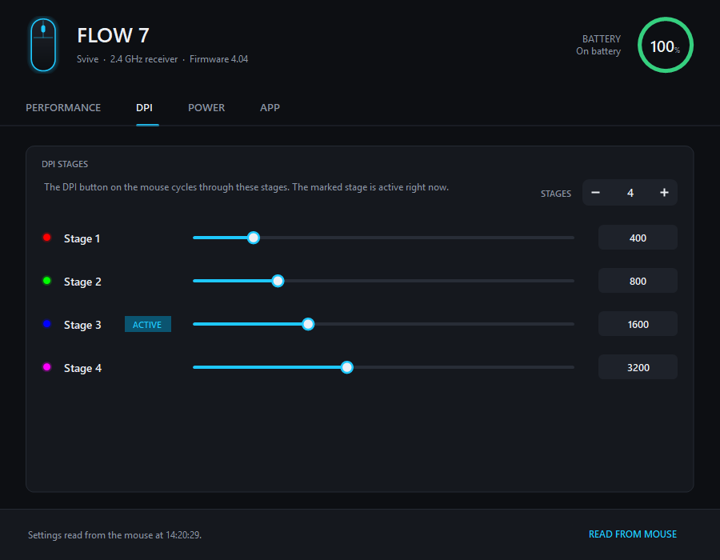
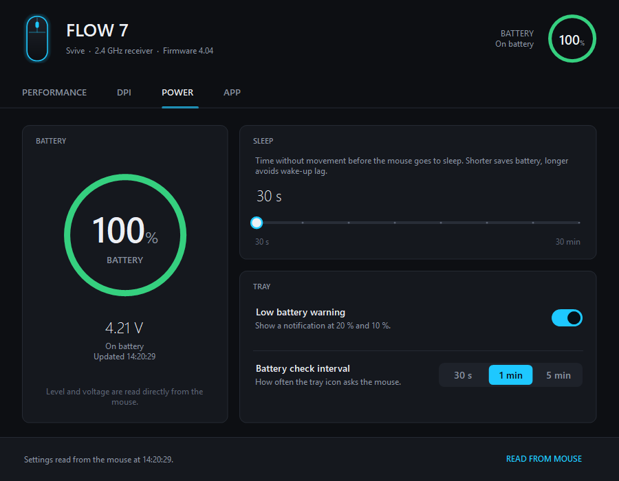

Software for the Svive Flow 7
See the battery level of your Svive mouse in the Windows tray, and change DPI, polling rate, lift-off, debounce and sleep settings. Everything the Flow 7 was missing.
Windows 10 and 11 · a single small .exe · no account, no ads, no internet access

What it does
Battery level in the tray
The icon shows the percentage and changes colour as the battery drains. You get a warning at 20 % and 10 %.
DPI stages
1 to 6 stages, 100 to 30,000 DPI. The active stage follows the DPI button on the mouse.
Polling rate
125, 250, 500 or 1000 Hz, with a built-in test that measures what the mouse actually sends.
Sensor settings
Lift-off distance, motion sync and button debounce.
Sleep timer
Choose how long the mouse waits before it goes to sleep, from 30 seconds to 30 minutes.
Safe by design
Every change is read back from the mouse. Your original settings are backed up and can be restored with one click.


Supported mice
| Mouse | Battery | Settings |
|---|---|---|
| Svive Flow 7 | Yes | Yes, verified |
| Svive Flow 5, Flow S5, Flow S7 | Probably | Read-only until verified |
| Other Compx-based mice (VXE, ATK, Attack Shark and others) | Likely | Read-only until verified |
Own one of the untested mice? Help verify it.
Install
- Download
CompxTray.exefrom the latest release. - Run it. The battery icon appears next to the clock.
- Double-click the icon to open the settings.
The exe is not code-signed yet, so Windows SmartScreen may warn the first time. Choose More info → Run anyway. Each release is built by GitHub Actions from the public source and comes with a SHA-256 checksum.
FAQ
Is there official software for the Svive Flow 7?
When this project started, we could not find any official software or settings driver for the Svive Flow 7. The mouse works in Windows without a driver, but to see the battery level or change DPI and polling rate you need a tool like CompxTray.
How do I check the battery level of my Svive mouse?
Run CompxTray. The battery percentage is shown in the Windows tray and updates automatically.
Can I change the DPI and polling rate of the Svive Flow 7?
Yes. CompxTray sets 125, 250, 500 or 1000 Hz polling rate and 1 to 6 DPI stages from 100 to 30,000 DPI.
Does it work with the Svive Flow 5, Flow S5 or Flow S7?
Probably for the battery level, but these models have not been tested. Settings stay read-only until a model is verified.
Is CompxTray made by Svive?
No. CompxTray is an independent open-source project with no connection to Svive.